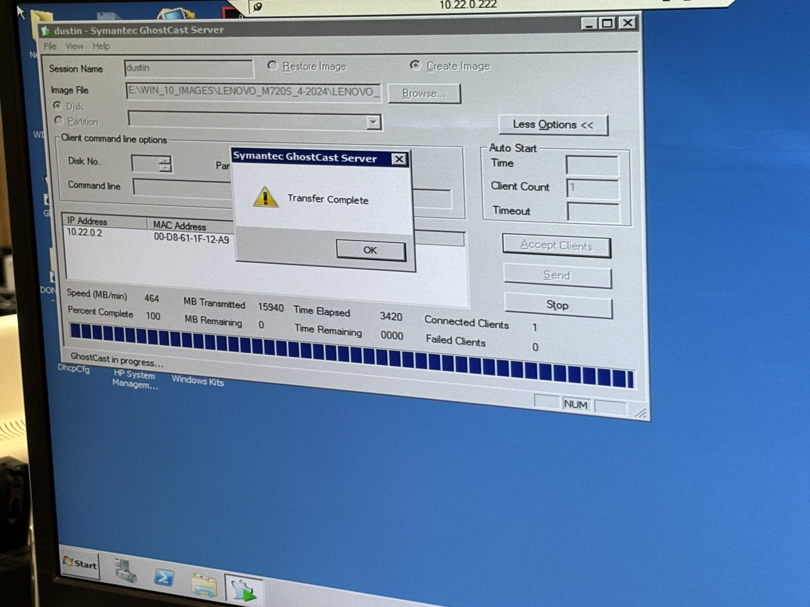

Project 1
Back To Projects
Displayed below is an image of our GhostCast server. This is a large executable machine that we use to
image a large number of computers at once if need be, in order to work efficiently. We use ghostCast due to the mass amount of
Computers that are running in the hospital, and how many need to be updated at once.

How?
I was able to complete this project by setting up a server that I could remote into with the administrator account, and being able to access GhostCast through there.
From there, there was provided information about the computers that needed to be updated, and with a simple process of identifying when they are able to be updated, and clicking a few buttons,
we were able to transfer over the images we needed.
Application?
I was able to apply this to my job as this was the major way we are able to update all windows based computers in the hospital at a very fast rate, making sure that nothing is down for too long so things can run smoothly.
Ontop of this, I was able to learn about a tool that I had never seen before that is able to image multiple computers at once.